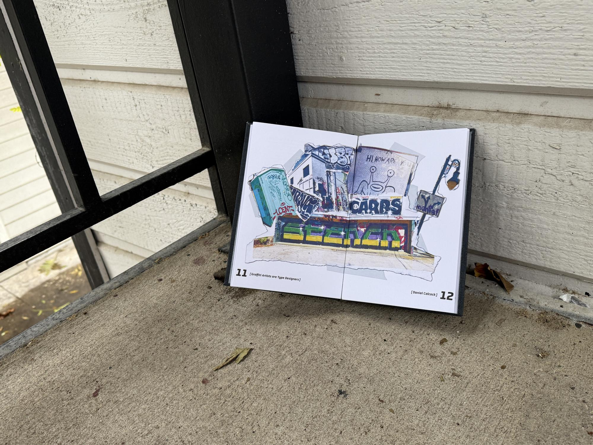
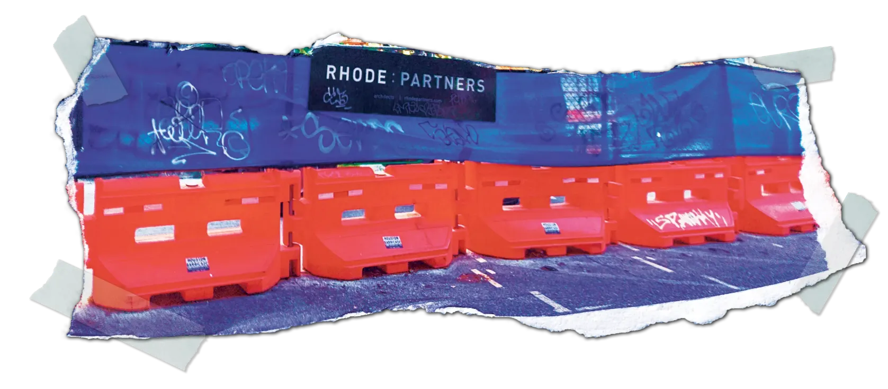
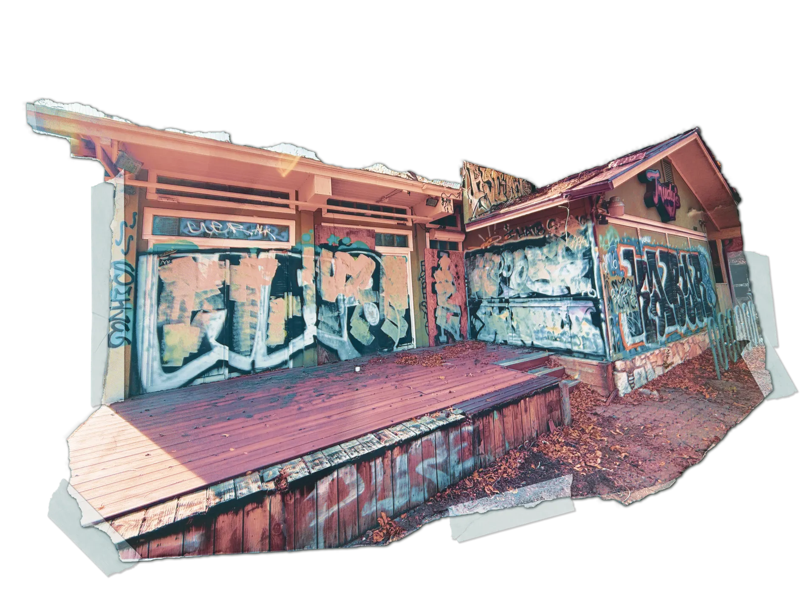
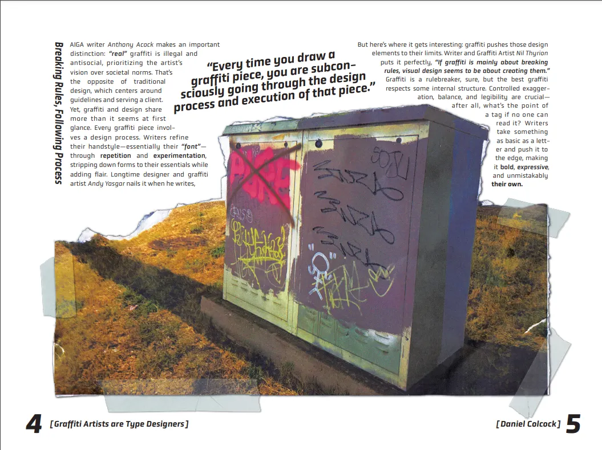
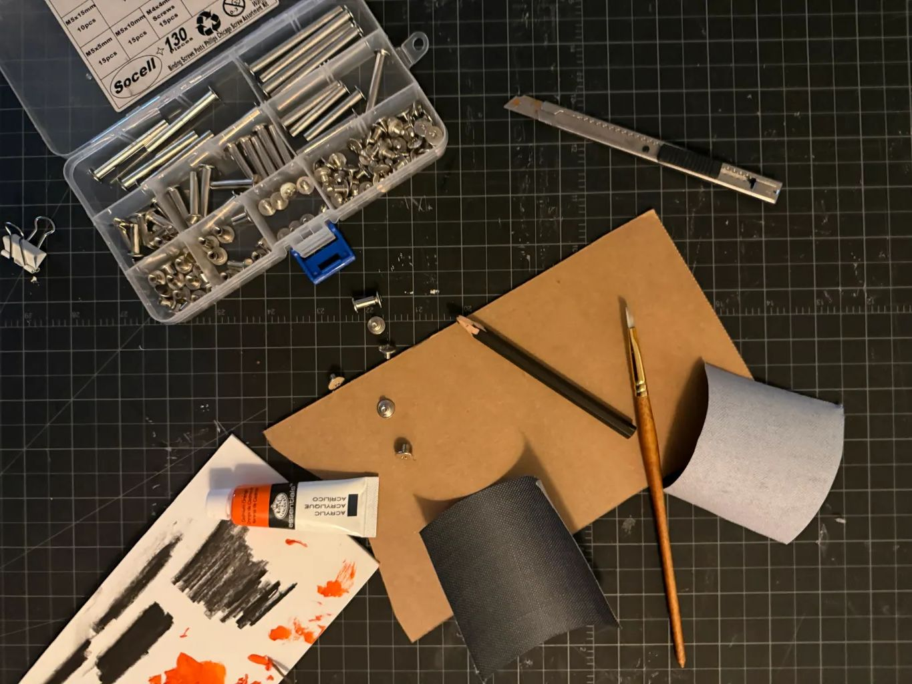
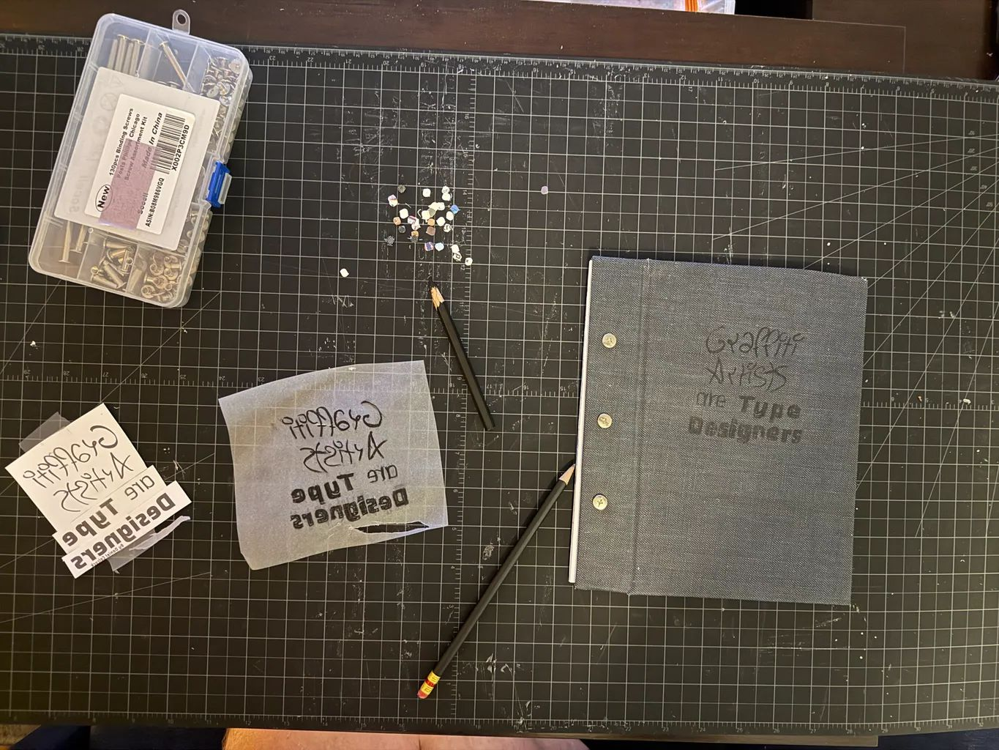
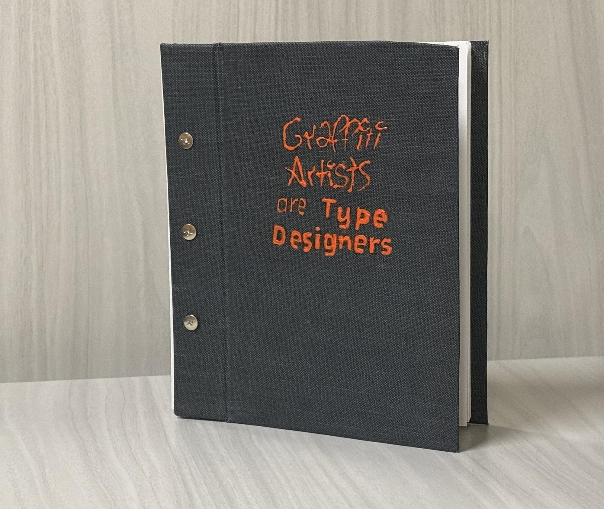
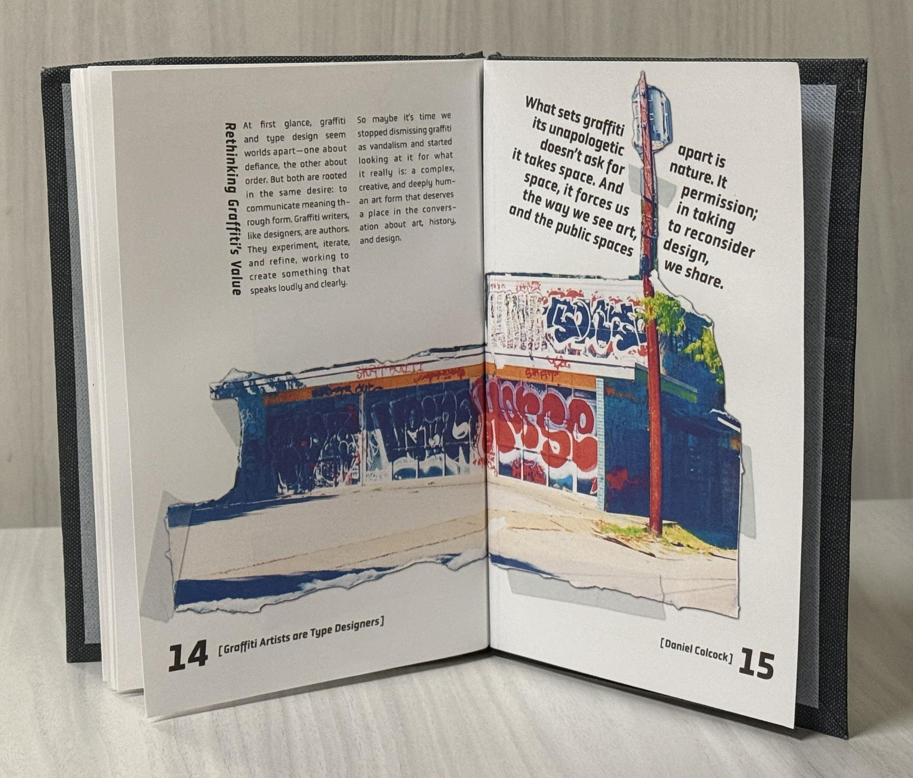
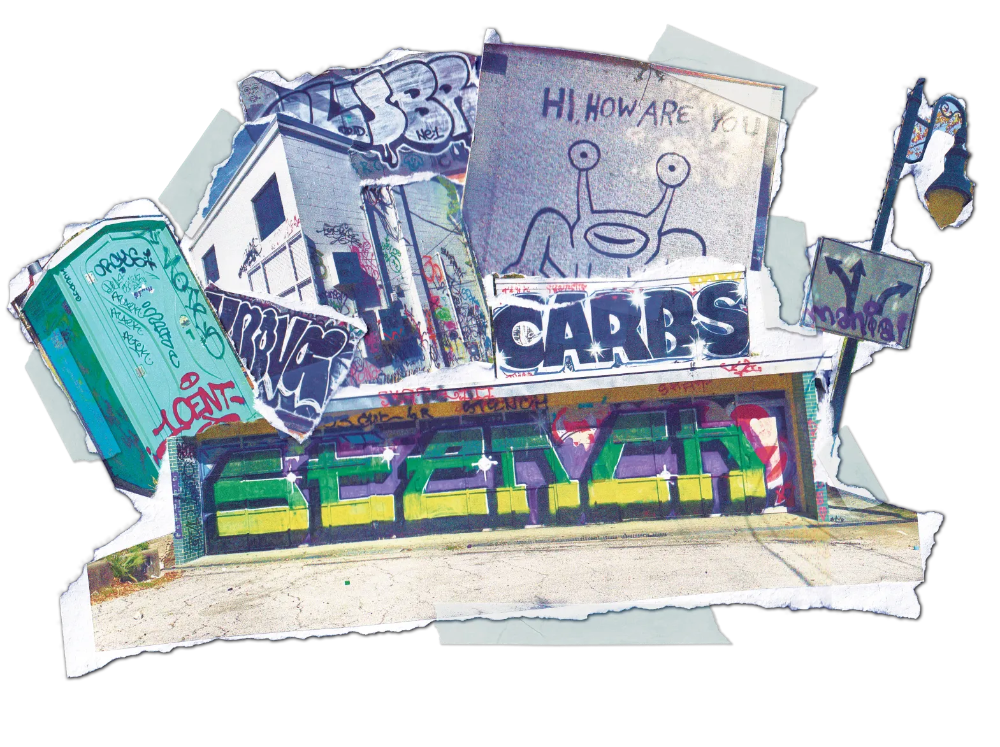

Graffiti Artists
are Type Designers
Editorial Design, Book Binding & Layout
A handbound editorial book ↗ arguing that graffiti artists and type designers share the same iterative process of critique, form development, and letter-form mastery. Developed a torn-image layout language, acrylic-painted covers, and screw-post binding to bridge street energy with typographic craft.
Project Brief
For Typography 1, I was asked to create a book on any topic related to type. I chose to explore the intersection of graffiti and typography, a connection I had been increasingly curious about since moving to Austin for college. The central argument: graffiti artists are type designers. Both develop letter-forms through iteration, critique, and a deep attention to form.

Research
I first researched the historical and cultural roots of graffiti and how it emerged as a voice for marginalized communities, evolved its own style taxonomy (tags, throw-ups, wild style), and developed a culture of mentorship and critique that mirrors a formal type education. I then went out into the city, looking for eye catching tags and complex throw ups that I could dissect.

Layout Ideation
My first layouts felt too clean for a book about graffiti, they fit better in a textbook. Inspiration came to me from the torn flyers layered I saw layered on top of one other on a street lamps. That chaotic, layered energy was exactly what graffiti was at its core, and what my book should emulate.

I printed out and ripped, scrapped, and sanded the photos to give them real texture. I then scanned the photos back into the layouts and placed the type around them. This created a much more dynamic and interesting layout that carried the energy of the streets to the page.

Cover & Materials
The cover now had to match the content of the book. I first designed the cover digitally and transferred it to a grey fabric with charcoal. I then painted the covers with acrylic to echo the texture of puff paint on concrete. The cover and pages were held together with screw-post binding, which gave it an industrial, riveted look.


Outcome

The final book balances the chaotic energy of graffiti with the structure of a designed grid, breaking that rule to emphasize point and bring energy to the page. Torn photographic examples sit alongside clean typographic hierarchies. The pacing moves from historical context to artist profiles to formal analysis, showing that there is more in common than one may first assume.


What I Learned
This project taught me how material and form can carry an argument as strongly as words. The torn-image technique, the painted cover, the binding method are each decisions that reinforced the central thesis. It pays dividends to step away from the screen, step away from the work and observe it for what it is and what it wants to become.
If I was to rework this project, I would take more time on the cover to bring more of that chaotic energy out of the book. I would also like to produce foldouts that diagram, in a larger scale, typographic similarities between graffiti and type design.
